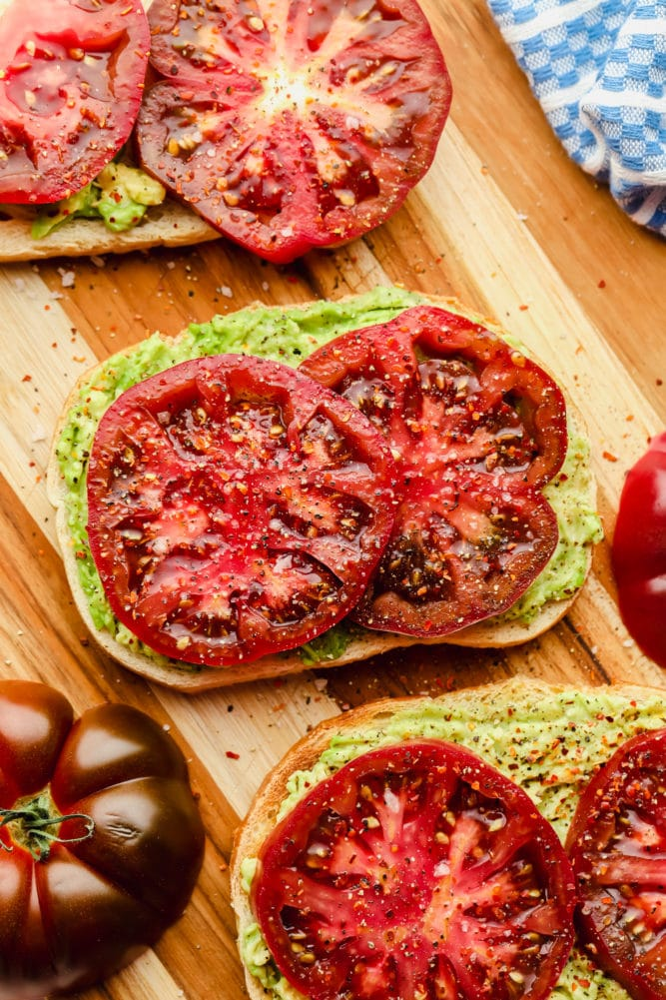

Top-Tier Avocado Toast

Description
Few things in life give me as much joy as ripe avocados and the many, many great uses for them.
Whether they're in savory guacamole, used as toppings for baked potatoes and salads, served with lemon juice over fluffy rice, the list of applications goes on and on.
Of all the wonderful dishes that avocados have given us, one towers above the rest: avocado toast.
Simple. Elegant. Delicious. Avocado toast is truly the artist's blank canvas of the culinary world. Everyone likes theirs served a particular way, and here's
my preference. I eat this nearly every day, and it keeps me going strong - satiated, without feeling sluggish. I hope you enjoy!
Ingredients
- An Avocado, cut in half
- Sourdough Bread, two slices
- A Tomato, sliced
- Garlic, 1 halved clove
- Nutritional Yeast, 1 tablespoon
- Sauerkraut, around 50 grams
- Truffle Salt, to taste
- Paprika, a pinch
Instructions
- Toast the sliced sourdough on the darkest setting possible without burning it.
- Take half of the sliced garlic clove, and with your hand, rub it as if grating it onto one piece of the toast. Repeat with the other clove and slice of toast.
- Slice the avocado inside the shell, squeezing each half onto the toast with your hands.
- Take the sliced tomato, and lay it onto the avocado. Add paprika to taste.
- Cover the tomato with a healthy serving of sauerkraut, then truffle salt to taste.
- Last but not least, sprinkle nutritional yeast in a light layer across both pieces of toast.
Back to Recipes